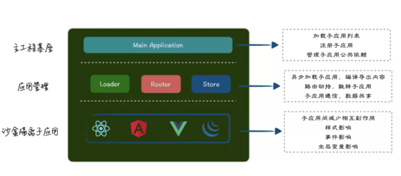

转载 https://mp.weixin.qq.com/s/L9wbfNG5fTXF5bx7dcgj4Q
字节跳动是如何落地微前端的
微前端是什么：微前端是一种类似于微服务的架构，是一种由独立交付的多个前端应用组成整体的架构风格，将前端应用分解成一些更小、更简单的能够独立开发、测试、部署的应用，而在用户看来仍然是内聚的单个产品。
微前端诞生在两个大的背景下，在提倡拥抱变化的前端社区可以看到新的框架、技术、概念层出不穷，并且随着 Web 标准的演进，前端应用已经具备更好的性能、更快的开发效率。但随着而来的是应用的复杂程度更高、涉及的团队规模更广、更高的性能要求，应用复杂度已经成为阻塞业务发展的重要瓶颈。
微前端就是诞生于 Web 应用日益复杂化的场景中，因为随着网络速度、计算机硬件水平的提升和 Web 标准的演进，过去 Web 应用用户体验远不如传统的应用软件时代已逐渐远去，两者之间在用户体验上的差距不断缩减，并且由于 Web 应用开发速度快、用完即走等特性，导致的一个最终结果就是「能用 Web 技术实现的应用，最终都会通过 Web 来实现」。在近几年涌现了一大批之前只能在传统 PC 软件中才能看到的优秀产品，例如：Photoshop、Web Office、Web IDE。尽管随着 Web 标准的演进，前端工程化也在不断演变，从模块化到组件化在到现在的工程化，但在面对跨团队大规模开发、跨团队企业级应用协作，现有的分治设计模式仍然显得有心无力。
大规模 Web 应用的困局
尽管 Web 应用的复杂度和参与人数以爆炸式的增长速度，但却没有一种新的架构模式来解决现有的困境，并同时兼顾 DX（developer experience）和 UX（user experience）。
以字节跳动内「研发中台」举例，在研发日常工作中需要使用非常多的研发系统，例如：代码管理、代码构建、域名管理、应用发布、CDN 资源管理、对象存储等。站在整个公司研发的角度考虑，最好的产品形态就是将所有的研发系统都放置同一个产品内，用户是无法感知他在使用不同的产品，对于用户而言就是单个产品不存割裂感，也不需要去学习多个平台，仅仅需要学习和了解字节跳动内的「研发中台」即可。
在字节跳动内这一类应用随处可见，由于字节跳动内存在大量业务线，每一条业务线都会诞生大量的中台系统，并且还在指数增长，以字节跳动内电商业务举例，对于电商运营的日常工作来说，其实与研发日常工作一样，围绕在：商品、商家、品牌、风控、营销等工作上，那么对于电商运营来说怎么样才最高效的电商运营系统呢，由于整个系统涉及范围较广，在实际的研发过程中必然会以功能或业务需求垂直的切分成更小的子系统，切分成各种小系统后尽管由于分治的设计理念提升了开发者体验，但是一定程度上降低了用户体验。那能否以一种新的架构模式，既保开发者体验，又能提升用户体验呢。
传统 Web 应用的利与弊
这里简单分析一下传统 Web 应用在开发大规模应用和涉及多研发团队协作时遇到的一些困境，以上面案例中的「电商运营平台」举例，对于电商运营而言商品、商家、品牌等都是电商运营平台能力的一部分，而不是独立之间的孤岛。若以传统的前端研发模式进行开发，那么此时有两种项目设计策略：
- 将平台内多个系统放置同一个代码仓库维护 ，采用 SPA（Single-page Application） 单页应用模式
- 将系统分为多个仓库维护，在首页聚合所有平台的入口，采用 MPA（Multi-page Application）多页应用模式
若采用多个系统放置同一个项目内维护：
- 优势：
- 更好的性能
- 具备局部更新，无缝的用户体验
- 提前预加载用户下一页的内容
- 统一的权限管控、统一的 Open API 开发能力
- 更好的代码复用，基础库复用
- 统一的运营管理能力
- 不同系统可以很好的通信
- SPA 应用特有优势
- 劣势：
- 代码权限管控问题
- 项目构建时间长
- 需求发布相互阻塞
- 代码 commit 混乱、分支混乱
- 技术体系要求统一
- 无法同时灰度多条产品功能
- 代码回滚相互影响
- 错误监控无法细粒度拆分
采用方案一的劣势非常明显，在日常开发中研发：代码构建半小时以上、发布需求时被需求阻塞、无法局部灰度局部升级、项目遇到问题时回滚影响其他业务、无法快速引进新的技术体系提高生产力，项目的迭代和维护对于研发同学而言无疑是噩梦。
尽管降低了开发体验，如果对项目整体的代码拆分，懒加载控制得当，其实对于使用平台的用户而言体验却是提升的，这一切都归咎于 SPA 应用带来的优势，SPA 应用跳转页面时无需刷新整个页面，路由变化时仅更新局部，不用让用户产生在 MPA 应用切换时整个页面刷新带来的抖动感而降低体验，并且由于页面不刷新的特性可以极大程度的复用页面间的资源，降低切换页面时带来的性能损耗，用户也不会感知他在使用不同平台。
若采用拆分成多个仓库维护
- 优势
- 可以以项目维度拆分代码，解决权限管控问题
- 仅构建本项目代码，构建速度快
- 可以使用不同的技术体系
- 不存在同一个仓库维护时的 commit 混乱和分支混乱等问题
- 功能灰度互不影响
- 劣势
- 用户在使用时体验割裂，会在不同平台间跳转，无法达到 SPA 应用带来的用户体验
- 只能以页面维度拆分，无法拆分至区块部分，只能以业务为维度划分
- 多系统同灰度策略困难
- 公共包基础库重复加载
- 不同系统间不可以直接通信
- 公共部分只能每个系统独立实现，同一运维通知困难
- 产品权限无法进行统一收敛
采用方案二在一定程度上提升了开发体验，但却降低了用户体验，研发在日常开发工作中需要使用大量的平台，但是却需要跳转到不同的平台上进行日常的研发工作，整体使用体验较差。体验较差的原因在于将由于通过项目维度拆分了整体「研发中台」这样的一个产品，使各个产品之间是独立的孤岛，系统间相互跳转都是传统意义上的 MPA，跳转需要重新加载整个页面的资源，除了性能是远不如 SPA 应用的并且应用间是没法直接通信，这就进一步增强了用户在使用产品时的割裂感。
背景和意义总结
通过以上两个场景案例，其实可以发现由于 Web 应用在逐步取代传统的 PC 软件时，大规模 Web 应用在面对高复杂度和涉及团队成员广下无法同时保证 DX 和 UX 的困境。传统的分而治之的策略已经无法应对现代 Web 应用的复杂性，因此衍生出了微前端这样一种新的架构模式，与后端微服务相同，它同样是延续了分而治之的设计模式，不过却以全新的方法来实现。
微前端解决方案
上一节总结了微前端出现的背景和意义，并且了解了两种传统 Web 应用的研发模式：SPA（Single-page Application）、MPA（Multi-page Application）在涉及人员广和项目复杂度高的场景下带来的劣势，那么期望能有一种新的架构能同时具备 SPA 和 MPA 两种架构优势，并同时提升 DX（developer experience）和 UX（user experience）呢？
那在理想的情况下，期望能达到，将一个复杂的单体应用以功能或业务需求垂直的切分成更小的子系统，并且能够达到以下能力：
- 子系统间的开发、发布从空间上完成隔离
- 子系统可以使用不同的技术体系
- 子系统间可以完成基础库的代码复用
- 子系统间可以快速完成通信
- 子系统间需求迭代互不阻塞
- 子应用可以增量升级
- 子系统可以走向同一个灰度版本控制
- 提供集中子系统权限管控
- 用户使用体验整个系统是一个单一的产品，而不是彼此的孤岛
- 项目的监控可以细化到到子系统
那么基于上面理想情况，如何从零设计一套全新的架构用于解决现代 Web 应用在面对企业级系统遇到的困境呢。
微前端的整体架构
那么如何提供一套既具备 SPA 的用户体验，又具备 MPA 应用带来的灵活性，并且可以实现应用间同灰度，监控也可以细化到子系统的解决方案呢？目前在字节跳动内应用的微前端解决方案「Garfish」就是这样的一套方案 ，该解决方案主要分为三层：部署侧、框架运行时、调试工具，采用的是 SPA 的架构。
解决方案整体架构

微前端部署平台
部署平台作为微前端研发流程中重要的一环，主要提供了：微前端的服务发现、服务注册、子应用版本控制、多个子应用间同灰度、增量升级子应用、下发子应用信息列表，分析子应用依赖信息提取公共基础库降低不同应用的依赖重复加载。
用于解决微前端中子应用的独立部署、版本控制和子应用信息管理，通过 Serverless 平台提供的接口或在渲染服务中下发主应用的 HTML 内容中包含子应用列表信息，列表中包括了子应用的详细信息例如：应用 id、激活路径、依赖信息、入口资源等信息，并通过对于子应用的公共依赖进行分析，下发子应用的公共依赖，在运行时获取到子应用的信息后注册给框架，然后在主应用上控制子应用进行渲染和销毁。
微前端运行时
Why not iframe
谈到微前端绕不开的话题就是为什么不适用 iframe 作为承载微前端子应用的容器，其实从浏览器原生的方案来说，iframe 不从体验角度上来看几乎是最可靠的微前端方案了，主应用通过iframe 来加载子应用，iframe 自带的样式、环境隔离机制使得它具备天然的沙盒机制，但也是由于它的隔离性导致其并不适合作为加载子应用的加载器，iframe 的特性不仅会导致用户体验的下降，也会在研发在日常工作中造成较多困扰，以下总结了 iframe 作为子应用的一些劣势：
-
使用iframe 会大幅增加内存和计算资源，因为 iframe 内所承载的页面需要一个全新并且完整的文档环境
-
iframe 与上层应用并非同一个文档上下文导致
-
- 主应用劫持快捷键操作
- 事件无法冒泡顶层，针对整个应用统一处理时效
-
- 事件冒泡不穿透到主文档树上，焦点在子应用时，事件无法传递上一个文档流
- 跳转路径无法与上层文档同步，刷新丢失路由状态
- iframe 内元素会被限制在文档树中，视窗宽高限制问题
- iframe 登录态无法共享，子应用需要重新登录
- iframe 在禁用三方 cookie 时，iframe 平台服务不可用
- iframe 应用加载失败，内容发生错误主应用无法感知
- 难以计算出 iframe 作为页面一部分时的性能情况
-
无法预加载缓存 iframe 内容
-
无法共享基础库进一步减少包体积
-
事件通信繁琐且限制多
基于 SPA 的微前端架构
尽管难以将 iframe 作为微前端应用的加载器，但是却可以参考其设计思想，一个传统的 iframe 加载文档的能力可以分为四层：文档的加载能力、HTML 的渲染、执行 JavaScript、隔离样式和 JavaScript 运行环境。那么微前端库的基础能力也可以参考其设计思想。
从设计层面采取的是基座+子应用分治的概念，部署平台负责进行服务发现和服务注册，将注册的应用列表信息下发至基座，通过基座来动态控制子系统的渲染和销毁，并提供集中式的模式来完成应用间的通信和应用的公共依赖管理，因此 Garfish 在 Runtime 层面主要提供了以下四个核心能力：
-
加载器（Loader）
-
- HTML 入口类型，拆解 HTML Dom、Script、Style
- JS 入口类型，提供基础 Dom 容器
-
- 负责注册平台侧提供的应用列表
- 负责加载和解析子应用入口资源
- 预加载能力
- 解析子应用导出内容
-
沙箱隔离（Sandbox）
-
- 提供代码执行能力，收集执行代码时存在的副作用
- 提供销毁收集副作用的能力
- 支持沙箱多实例，收集不同实例的副作用
-
路由托管（Router）
-
- 解决不同应用间的路由不同步问题
- 提供路由劫持能力，在主应用上管控子应用路由
- 提供路由驱动能力来拼装完整的平台的能力
-
子应用通信（Store）
-
- 建立通信桥梁
- 提供共享机制

应用生命周期
整个微前端子应用的生命周期基本可以总结为：
-
渲染阶段
-
- 若入口类型为 HTML 类型，将开始解析和拆解子应用资源
- 若入口类型为 JS，创建子应用的挂点 DOM
-
- 主应用通过路由驱动或手动挂载的方式触发子应用渲染
- 开始加载应用的资源内容，并初始化子应用的沙箱运行时环境
- 判断入口类型
- 将子应用存在”副作用“（对当前页面可能产生影响的内容）交由沙箱处理
- 开始渲染子应用的 DOM 树
- 触发子应用的渲染 Hook
-
销毁阶段
-
- 若路由变化离开子应用的激活范围或主动触发销毁函数，触发应用的销毁
- 清除应用在渲染时和运行时产生的副作用
- 移除子应用的 DOM 元素
加载器的设计
加载器的整体设计理念其实与 React-loadable 非常类似，具备以下能力：
- 异步加载组件资源
- 可以预加载资源
- 可以缓存组件资源
- 缓存组件实例
与组件不同的是微前端作为一种能够将单体应用拆解成多个子应用的架构模式，不同于组件，这些被拆分出去的子应用最好的研发模式是在开发、测试、部署都与宿主环境分离，子应用本身应具备自治能力，那么此时就与 iframe 提供的能力非常类似，iframe 通过加载 HTML 文档的形式加载整个子应用的资源，那么子应用本身就可作为一个独立站点，天然具备独立开发、测试的能力。因此 Garfish 的加载器提供了两种应用入口类型：HTML 类型和 JS 入口类型，但需要注意的是 Garfish 并非像 iframe 一样将其分为了另一个文档流，而是将其与主应用作为同一个文档流处理，用以规避其不再同一个文档流带来的体验感割裂问题。
由于 HTML 入口类型天然具备独立、开发、测试的特性，在微前端整体架构设计中，对于跨团队协作而言，最好的研发模式是能降低其沟通成本，而降低沟通成本的最好方式是不沟通，所以一般项目类型都尽可能的推荐用户使用 HTML 的入口类型。
那么针对 HTML 入口类型的加载器需要做一些什么呢，下面是一张浏览器的渲染过程图：
针对浏览器的渲染过程也可将其分为：HTML 文本下载、 HTML 拆解为语法树、拆解语法树中具备”副作用的内容“（对当前页面可能产生影响的内容）如 Script、Style、Link 并交由沙箱处理进行后渲染，与一般的子应用不同的是需要子应用提供 provider，provider 中包含了子应用渲染和销毁的生命周期，这两个 Hook 可以应用缓存模式中进一步增强应用的渲染速度和性能。
沙箱的设计
为什么需要沙箱
其实在过去的 Web 应用中是很少提及到沙箱这一概念的，因为组件的开发一般都会由研发通过研发规范来尽可能的去避免组件对当前应用环境造成副作用，诸如：组件渲染后添加了定时器、全局变量、滚动事件、全局样式并且在组件销毁后会及时的清除子应用对当前环境产生的副作用。
与组件完全不同的是微前端是由多个独立运行的应用组成的架构风格，这些系统可能分别来自不同的技术体系。项目的开发、测试从空间和时间上都是分离的，由于没有 iframe 一样原生能力的隔离很难应用间不发生冲突，这些冲突可能会导致应用发生异常、报错、甚至不可用等状态。
以 Webpack4 JsonpFunction 为例
在 Webpack5 中提供了一个重要的功能就是 Module Federation，随着 Webpack 5 推出 Module Federation ，与 Webpack 4 发生变化的一个重要配置就是 JsonpFunction 属性变为了 chunkLoadingGlobal，并且由原来的默认值 webpackJsonp 变成了默认使用 output.library 名称或者上下文中的 package.json 的 包名称(package name)作为唯一值（webpack.js.org/issues/3940）。
为什么会发生这个转变呢，如果了解过 Webpack 构建产物的一定会知道 Webpack 通过全局变量存储了分 chunk 后的产物，用于解决分包 chunk 的加载问题。由于 Webpack 5 引入 Module Federation 页面中可能会同时存在两个以上的 Webpack 构建产物，如果还是通过是通过同一个变量存储要加载的 chunk ，必然会造成产物之间的互相影响。
通过 Webpack 4 到 Webpack 5 支持 Module Federation 之后可以发现，在一个基础库尚未考虑默认兼容多实例的场景下，贸然将其作为多实例使用很可能会造成应用无法按照预期运行，更为严重的是你以为其正常运行了其实应用已经发生了严重的内存泄漏或不可预知的情况，倘若将 Webpack 构建产物的应用多次动态的在页面中运行，将会发现已经造成严重的内存泄漏，因为 Webpack 会增量的向全局存储 chunk 的变量上挂载模块以及依赖信息，简单来说就是每次执行 Webpack 构建的子应用代码都会向 webpackJsonp 数组 push 大量的数据，最终造成内存泄漏，直至页面崩溃。
沙箱的核心能力
为了保证应用能够稳定的运行且互不影响，需要提供安全的运行环境，能够有效地隔离、收集、清除应用在运行期间所产生的副作用，那应用运行期间主要会产生哪些副作用呢，可以将其分为以下几类：全局变量、全局事件、定时器、网络请求、localStorage、Style 样式、DOM 元素。
在 Garfish Runtime 中的沙箱主要能力也是围绕在这一块的能力建设上，针对子应用可能产生的副作用类型主要分为两类，一类是：静态副作用、另一类则是：动态副作用。这里静态副作用和动态副作用分别指的是什么呢，静态副作用指的是 HTML 中静态标签内容例如：Script 标签、Style 标签、Link 标签，这些内容属于在 HTML 文档流中就包含的，另外一部分副作用属于动态副作用，动态副作用指的是由 JavaScript 动态创建出来的，例如 JavaScript 可以动态创建 Style、动态创建 Script、动态创建 Link、动态执行代码、动态添加 DOM 元素、添加全局变量、添加定时器、网络请求、localStorage 等对当前页面产生副作用的内容。
针对子应用的静态副作用的收集比较简单，Loader 核心模块上已经提供了子应用入口资源类型的分析和拆解，可以从子应用 DOM 树中轻松拆解获取副作用内容，那么对于静态副作用已经可以完成有效的收集、清除，但是尚未具备隔离的能力。动态创建的副作用都是通过 JavaScript 来动态创建的，需要收集到 JavaScript 运行时产生的副作用，并提供副作用的隔离和销毁能力。
沙箱设计的两种思路
在 Garfish 微前端中，如何有效收集、隔离、清除应用的副作用是保障应用能够平稳运行的核心能力之一。沙箱的主要能力也在于能够捕获动态创建的副作用，对应用的副作用进行隔离和清除。
那么如何能够有效的捕获到动态创建的副作用、收集、并隔离呢？目前 Garfish 提供了两种设计思路，一种是快照模式，另外一种是 VM 模式。
快照沙箱
顾名思义，在应用运行前通过快照的模式来保存当前执行环境，在应用销毁后恢复回应用之前的执行环境，用于实现应用间副作用的隔离和清除。类似于 “SL 大法”，通过 save 存储环境，通过 load 加载环境的模式。
代码实现思路

核心设计思想简述：
- 针对每一种副作用提供一个 Patch 类，这个类需要提供 save 和 load 两个方法
- Save 对应着该副作用的环境快照存储，Load 对应着销毁该副作用的销毁恢复环境
- 并且针对每一种 Patch 还可以存储其在运行期间发生的变化，在优化场景时并不用所有代码，仅恢复执行环境即可
VM 沙箱
通过快照沙箱的最简化的核心实现后可以发现，它的设计理念依赖于整个代码的执行属于线性的过程，即：存储执行环境=>执行具备副作用的代码=>恢复执行环境，但在实际的场景中对于应用的划分并以页面为维度划分，同一个页面可能存在多个应用，所以它的执行顺序并非线性，可能同时存在多个快照沙箱的实例环境，也就是快照沙箱多实例，以下面代码举例：
通过上面的代码可以发现，在同时运行多个快照沙箱实例时，在代码执行顺序非线性的场景下，并不能有效的收集和处理应用的副作用，也基于此快照沙箱无法使用在非线性呢多实例的场景中，因此也进一步推出了 VM（virtual machine） 沙箱。
维基百科关于 VM 的解释：在计算机科学中的体系结构里，是指一种特殊的软件，可以在计算机平台和终端用户之间创建一种环境，而终端用户则是基于虚拟机这个软件所创建的环境来操作其它软件。虚拟机（VM）是计算机系统的仿真器，通过软件模拟具有完整硬件系统功能的、运行在一个完全隔离环境中的完整计算机系统，能提供物理计算机的功能。
在 Node 中也提供了 VM 模块，不过不过不同于传统的 VM，它并不具备虚拟机那么强的隔离性，并没有从模拟完整的硬件系统，仅仅将指定代码放置了特定的上下文中编译并执行代码，所以它无法用于不可信来源的代码。
参考 Node 中 VM 模块的设计，以及 JavaScript 词法作用域 的特性，可以设计出 VM 沙箱，不过与传统的 VM 差异也同样存在，它并能执行不可信的代码，因为它的隔离能力仅限于将其运行在一个指定的上下文环境中。
从而得出以下设计
隔离环境需要哪些上下文
针对副作用的类型：全局变量、全局事件、定时器、网络请求、localStorage、Style 样式、DOM 元素，分别提供了全新的执行上下文：
-
Window
-
- 用于隔离全局环境
-
document
-
- 收集 DOM 副作用
- 收集 Style 副作用，进行处理
- 收集 Script，继续放置沙箱处理
-
- 用于捕获动态创建的 DOM 节点、Style、Script
-
timeout、interval
-
- 处理定时器
-
localstorage
-
- 隔离 localStorage
-
listener
-
- 收集全局事件
新的执行上下文哪里来
新的执行上下文有两个来源，
- 来源于当前环境
- 来源于 iframe 的执行环境
由于 iframe 创建后需要需要较多的内存资源和计算资源，而微前端中的 VM 沙箱并不需要一个完全的执行上下文，所以可以基于当前环境。
快照沙箱和 VM 沙箱能力对比
路由系统的设计
在于现代 MVC 的设计思想，前端框架的设计思想也一直在发生变更，现代 Web 前端框架提供的最经典的能力莫过于将 MVC 中的 Constroller 变为了 Router，目前几乎主流的前端框架都支持路由驱动视图，仅提供一个 Router Map 路由表，无需关注控制任何路由状态即可完成跳转后的路由更新。
通过微前端出现的背景和意义，可以了解到微前端主要是用于解决：应用增量升级、多技术体系并存、构建大规模企业级 Web 应用而诞生的。那么在基于 SPA 的微前端架构中也可以了解到，目前微前端主要是采用应用分而治之 + 动态加载 + SPA 应用的模式来解决大规模应用带来的一系列问题。在以组件为颗粒度的 SPA 应用中组件内部是不需要关心路由的，但是在微前端中主要通过应用维度来拆分，那么拆分的应用也可能是一个独立的 SPA 应用，那么此时主应用与子应用的关系如何编排呢？
微前端应用中理想的路由调度
假设存在一个 Garfish 站点，这个站点它是由主应用+三个子应用构成，主应用的 basename 为 /demo，并存在三个 Tab 分别指向跳转至不同的应用，理想的路由效果：
- 在点击 vue-app Tab，跳转至
/demo/vue-app路由后，分别激活vue-app下，为 Vue 类型的 A 应用和 B 应用，并激活 A 应用和 B 应用中的 Home 组件 - 点击 React-app Tab 进入到
/demo/react-app路由后，分别激活react-app下，为 React 类型的 C 应用，并激活 C 应用的 Home 组件 - 在激活 C 应用的基础上，点击 Detail 按钮，跳转至
/demo/react-app/detail，并激活 C 应用的 detail 组件。 - 点击浏览器返回按钮展示，跳转
/demo/react-app/detail，并激活 C 应用的 Home 组件，至此完成浏览器的基本路由跳转能力。
不考虑任何路由处理的场景
假设存在一个 Garfish 站点，这个站点它是由主应用+一个子应用构成。由于 Garfish 采用的是 SPA 架构，子应用与主应用所处于同一个执行上下文，子应用的路由原样反应在主应用上。
那么此时分别跳转到：/home、/detail路由会发现哪些问题呢？
-
假定跳转的方法可以同时触发主子应用路由更新，主应用路由和子应用路由会同时发生抢占情况，后渲染的组件会覆盖先渲染的路由组件
-
在触发路由跳转方后，只有主应用视图触发刷新、只有子应用视图刷新、或都不刷新
-
- 「视图的路由状态维护在框架内部」，通过原生跳转无法触发视图更新
此时当分别跳转到：/home、/detail、/test 路由时分别触发对应的组件视图，但是倘若子应用路由中也存在 /detail视图呢，由于应用的开发采用分治的模式，应用的开发从空间和时间上都是分离的，无法保证应用间的路由不发生路由抢占的情况。
「通过 history 路由跳转无法保证应用能够触发视图更新」，在通过 history api 进行路由跳转时，是无法触发应用视图更新，假设存在一个 React 应用 A，存在一个组件视图 Test，分别通过 React 提供的路由方法跳转和原生的路由跳转进行观察：
Hash 和 History 路由模式
目前主流的 SPA 前端应用基本上都支持两种路由模式，一种是：hash 模式、另一种则是 History 路由模式，两者的优劣和使用并不在本文的讨论范围之内，这里仅做在微前端这种分离式开发模式下的介绍，在微前端这种分离式 SPA 应用开发的模式下该选择哪种路由模式，以及多 SPA 应用下他们的路由应该如何编排：
假设站点地址为：http://garfish.bytedance.net
正常路由情况
-
主应用 history 模式、子应用 history 模式
-
-
主应用（
basename: /example）： -
- 主应用所有路由基于：
http://garfish.bytedance.net/example例 - 例如跳转到：/appA，
http://garfish.bytedance.net/example/appA/子
- 主应用所有路由基于：
-
子应用（
basename: /example/appA）： -
- 子应用所有路由基于：
http://garfish.bytedance.net/example/appA - 跳转到子应用的 /detail 页，
http://garfish.bytedance.net/example/appA/detail
- 子应用所有路由基于：
-
特点：
-
- 当主子应用分别为 history 模式时，子应用的路由基于主应用基础路由并带上自己的业务路由
- 路由同步到主应用路由上，通过 子应用 scope 命名空间隔离（子应用 A，提供 appA 的 scope）主应用和其他应用的路由冲突，并将子应用
- 路径符合用户和开发者认知和理解
- 支持嵌套层级使用，并继续通过 scope 的命名空间保证路由可读
-
-
主应用 history 模式、子应用 hash 模式
-
-
主应用（
basename: /example）： -
- 主应用所有路由基于：
http://garfish.bytedance.net/example - 例如跳转到：/appA，
http://garfish.bytedance.net/example/appA/
- 主应用所有路由基于：
-
子应用（
basename: /example/appA）： -
- 子应用所有路由基于：
http://garfish.bytedance.net/example/appA - 从主应用：
http://garfish.bytedance.net/example/appA，跳转到子应用的 /detail 页，http://garfish.bytedance.net/example/appA#/detail特
- 子应用所有路由基于：
-
特点：
-
- 在一定程度上具备主子应用都为 history 模式的优势，不支持嵌套层级使用
- 目前多数框架都不支持以 hash 值作为 basename
- 可读性尚可
-
异常路由情况
-
主应用 hash 模式、子应用 history 模式
-
-
主应用（
basename: /example）： -
- 主应用所有路由基于：
http://garfish.bytedance.net/example - 例如跳转到：/detail，
http://garfish.bytedance.net/example#/appA
- 主应用所有路由基于：
-
子应用（
basename: /example#/appA）： -
- 子应用所有路由基于：
http://garfish.bytedance.net/example#/appA - 跳转到子应用的 /detail 页，
http://garfish.bytedance.net/example/detail#/appA
- 子应用所有路由基于：
-
特点：
-
- 「路由混乱」，不符合用户和开发者直觉
- 目前多数框架都不支持以 hash 值作为 basename
-
-
主应用 hash 模式、子应用 hash 模式
-
-
主应用（
basename: /example）： -
- 主应用所有路由基于：
http://garfish.bytedance.net/example - 例如跳转到：/detail，
http://garfish.bytedance.net/example#/appA
- 主应用所有路由基于：
-
子应用（
basename: /example#/appA）： -
- 子应用所有路由基于：
http://garfish.bytedance.net/example#/appA - 跳转到子应用的 /detail 页，
http://garfish.bytedance.net/example#/detail
- 子应用所有路由基于：
-
特点：
-
- 「路由混乱」，不符合用户和开发者直觉
- 目前多数框架都不支持以 hash 值作为 basename
- 可能与主应用或其他子应用发生路由冲突
-
Garfish Router 如何处理路由
通过上面理想的路由模式案例发现，微前端应用拆分成子应用后，子应用路由应具备自治能力，可以充分的利用应用解耦后的开发优势，但与之对应的是应用间的路由可能会发生冲突、两种路由模式下可能产生用户难以理解的路由状态、无法激活不同前端框架的下带来的视图无法更新等问题。
目前 Garfish 主要提供了以下四条策略
- 提供 Router Map，减少典型中台应用下的开发者理解成本
- 为不同子应用提供不同的 basename 用于隔离应用间的路由抢占问题
- 路由发生变化时能准确激活并触发应用视图更新
Router Map 降低开发者理解成本
在典型的中台应用中，通常可以将应用的结构分为两块，一块是菜单另一块则是内容区域，依托于现代前端 Web 应用的设计理念的启发，通过提供路由表来自动化完成子应用的调度，将公共部分作为拆离后的子应用渲染区域。
自动计算出子应用所需的 basename
当应用处于激活状态时，根据应用的激活条件自动计算出应用所需的基础路径，并在渲染时告诉框架，以便于应用间路由不发生冲突。
如何有效的触发不同应用间的视图更新
目前主流框架实现路由的方式并不是监听路由变化触发组件更新，让开发者通过框架包装后的 API 进行跳转，并内部维护路由状态，在使用框架提供 API 方法发生路由更新时，内部状态发生变更触发组件更新。
由于框架的路由状态分别维护在各自的内部，那么如何保证在路由发生变化时能及时有效的触发应用的视图更新呢，答案是可以的，目前主要有两种实现策略：
- 收集框架监听的 popstate 事件
- 主动触发 popstate 事件
因为目前支持 SPA 应用的前端框架都会监听浏览器后退事件，在浏览器后退时根据路由状态触发应用视图的更新，那么其实也可以利用这种能力主动触发应用视图的更新，可以通过收集框架的监听事件，也可以触发 popstate 来响应应用的 popstate 事件
基于「现代 Web 框架」的微前端最佳实践
微前端作为一种全新的 Web 应用类型，不同于以往传统的 Web 应用开发，微前端需要采用主子应用分治的开发模式后带来了一系列新的挑战，这些挑战包括但不限于：主子应用开发调试、普通 Web 应用如何快速变为微前端应用、如何支持微前端应用 SSR、主子应用数据通信触发视图更新。Modern.js 作为 Garfish 上层的现代 Web 框架，能够很好的解决这些问题，并提供开箱即用的开发体验。
微前端应用的调试开发
由于微前端应用采用分治的开发策略，应用间的维护和开发可能在时间和空间上都是分离的，那么在开发环境时启动整个微前端项目的所有主子应用，是一个并不明智的策略，不仅需要 clone 其他仓库并完成应用的运行，还要保证其代码的时效性。Modern.js 提供了更优的的策略：
-
某些子应用需要更新时
-
- 主应用线上环境
- 需要开发的子应用线下环境
- 不需要开发的子应用上线
-
主应用需要更新时
-
- 主应用线下环境
- 所有子应用线上环境
通过以上更优的调试策略，可以保证开发者仅运行自己的关注的应用即可。那么如何达到这种更优的，可以采用应用列表的下发模式，框架运行时加载下发的应用列表，在开发主应用时拉取线上的应用列表，在开发某个子应用时代理代理列表中的资源为子应用的列表。
传统 Web 应用支持微前端模式
通过微前端运行时章节可以发现传统 Web 应用与微前端应用间进行切换成本并不高，但需要研发关注应用的路由的调度、应用的生命周期导出、额外的构建配置、应用通信数据触发视图更新，微前端模式应用和传统 Web 应用间如何进行切换都存在一定的学习和理解成本。
在 Modern.js 中作为上层框架集成了 Garfish，原生支持微前端应用，可以通过简单配置即可完成微前端应用类型的转换，帮助用户快速搭建应用基础结构，以降低其学习成本，快速生成微前端应用。
微前端应用如何支持 SSR
微前端作为一种全新的架构模式，其分治设计模式除了带来的诸多优点外，但与之对应的是引入了新的问题，如何支持传统 Web 应用提供的 SSR 能力，由于微前端采用了分治的开发模式，应用拆分成了多个子应用，那么需要实现整体应用的 SSR 能力，则需要与具体的 Web 框架相结合，通过制定微前端应用的加载规则，达到微前端应用也能有效的实现 SSR 能力。
Modern.js 作为 Garfish 的上层框架，提供更开箱即用的上层能力 ，并解决了以上微前端不同于传统 Web 应用开发后带来的弊端，文末有关于 Modern.js 的发布预告，可以了解并关注。
微前端的优点
- 适用于大规模 Web 应用的开发
- 更快的开发速度
- 支持迭代可开发和增强升级
- 拆解后的部分降低了开发者的理解成本
- 同时具备 UX 和 DX 的开发模式
微前端的缺点
-
复杂度从代码转向基础设施
-
整个应用的稳定性和安全性变得更加不可控
-
具备一定的学习和了解成本
-
需要建立全面的微前端周边设施，才能充分发挥其架构的优势
-
- 调试工具
- 监控系统
- 上层 Web 框架
- 部署平台
何时使用微前端
-
大规模企业级 Web 应用开发
-
跨团队及企业级应用协作开发
-
长期收益高于短期收益
-
不同技术选型的项目
-
内聚的单个产品中部分需要独立发布、灰度等能力
-
微前端的目标并非用于取代 iframe
-
- 应用的来源必须可信
- 用户体验要求更高
总结
微前端概念的出现是前端发展的必然阶段，PC 互联网转向移动互联网时代时，PC 的场景并未完全被消灭，反而转向了衍生出了更多沉浸感更高、体验感更强的应用，与之对应的应该是出现新的架构模式来应对这些应用规模的增长。
微前端也并非银弹，采用微前端后复杂度并未凭空消失，而是由代码转向了基础设施，对架构设计带来了更大的挑战，并且在新的架构下需要设计并提供更多的周边工具和生态来助力这一新的研发模式。
本文更多的是从背景和设计层面讲清楚微前端解决方案应具备哪些能力，以及核心模块的设计。每一部分并未包含过于详细的细节，如果想要了解「微前端运行时」详细设计，可以通过 https://github.com/modern-js-dev/garfish 仓库了解细节。
参考
- 如何设计微前端中的主子路由调度：https://mp.weixin.qq.com/s/TAXP7ipDdtb2Jb-L3QHszA
- 如何取巧实现一个沙箱：https://mp.weixin.qq.com/s/Mg3fU0WvZUQnlWHdxc-b5A
- 微服务架构及其最重要的 10 个设计模式：https://www.infoq.cn/article/kdw69bdimlx6fsgz1bg3
- single-spa：https://github.com/single-spa/single-spa
If you like this blog or find it useful for you, you are welcome to comment on it. You are also welcome to share this blog, so that more people can participate in it. If the images used in the blog infringe your copyright, please contact the author to delete them. Thank you !